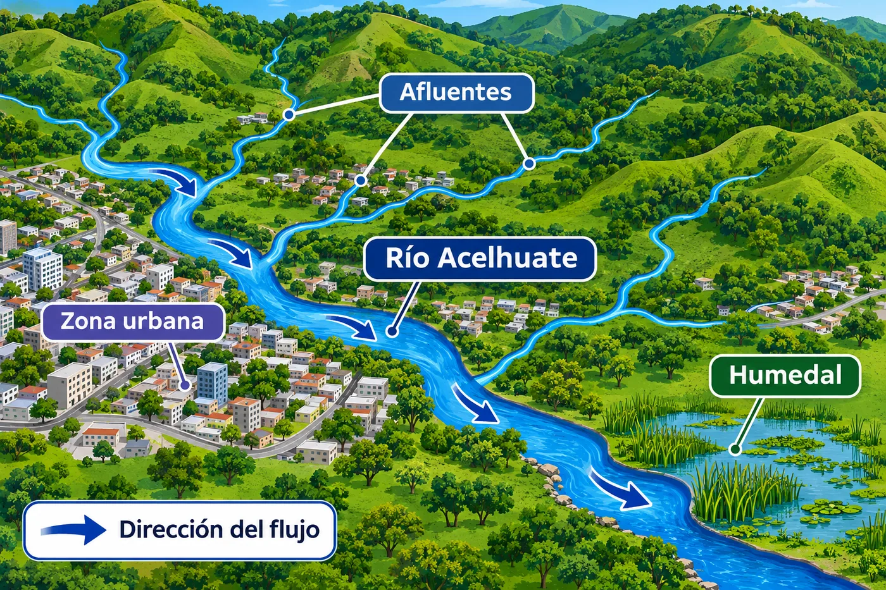
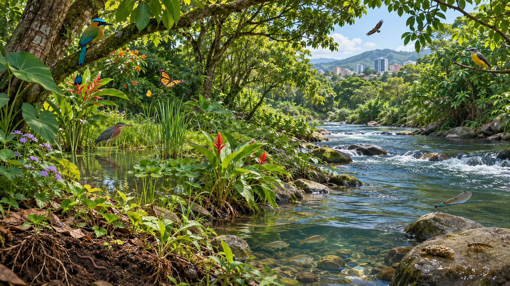

Portal educativo universitario · El Salvador
Un río urbano.
Un desafío de todos.
Comprende qué ocurre en el río Acelhuate, contrasta la evidencia y descubre cómo la educación, el saneamiento y la participación pueden abrir un camino hacia su recuperación.
✓ Fuentes verificables✓ Recursos multimedia✓ Actividades educativas
01 · Conozcamos el territorio
El Acelhuate forma parte de una red viva
La subcuenca del Acelhuate pertenece a la cuenca alta del río Lempa y conecta quebradas, afluentes, drenajes, zonas urbanas, comunidades y ecosistemas.
El diagnóstico del MARN de 2011 ubicó la subcuenca en sectores de San Salvador, La Libertad y Cuscatlán. Al estudiar un río desde la perspectiva de cuenca, lo que ocurre en un punto se relaciona con procesos que se desarrollan antes y después de él.
i
Conocer el diagnóstico ambiental →Lectura responsable: los datos históricos deben conservar su fecha, territorio y metodología. No deben presentarse como mediciones actuales.

02 · Ruta de aprendizaje
Comprender para actuar con responsabilidad
El portal organiza la investigación en cinco momentos que permiten pasar del diagnóstico a la acción.
01
Observar la problemática
Tipos de contaminación, evidencia histórica e inventario de vertidos.
Explorar →02Relacionar causas e impactos
Cómo las actividades humanas modifican el agua, los hábitats y la vida comunitaria.
Explorar →03Construir soluciones
Prevención, tratamiento, restauración, control ambiental y educación.
Explorar →04Profundizar con recursos
Videos, infografías, cursos oficiales y materiales para investigar.
Explorar →05Comprobar lo aprendido
Evaluación interactiva con explicación para cada respuesta.
Comenzar →
Una meta más amplia
La recuperación no consiste solamente en retirar basura
Un cauce visualmente limpio puede continuar recibiendo microorganismos, materia orgánica o sustancias químicas.
La recuperación requiere reducir aportes contaminantes desde su origen, tratar las aguas residuales, restaurar riberas, hacer cumplir la normativa, publicar indicadores comparables y sostener la educación ambiental.
Ver la ruta de recuperaciónProyecto académico
Universidad de El Salvador
Educación Ambiental y Cambio Climático · Ciclo II-2026
- Docente
- M.Sc. Isis Ivania Chávez Carrillo
- Integrantes
- Kelvin Ariel Martínez Lara
Andrea Nicole Azucena Blandón